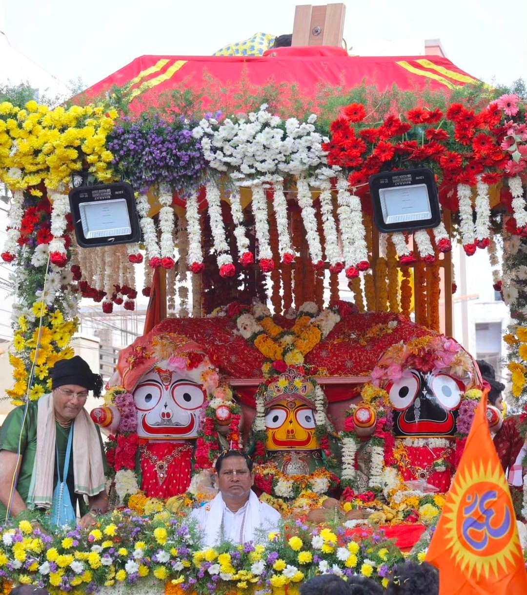
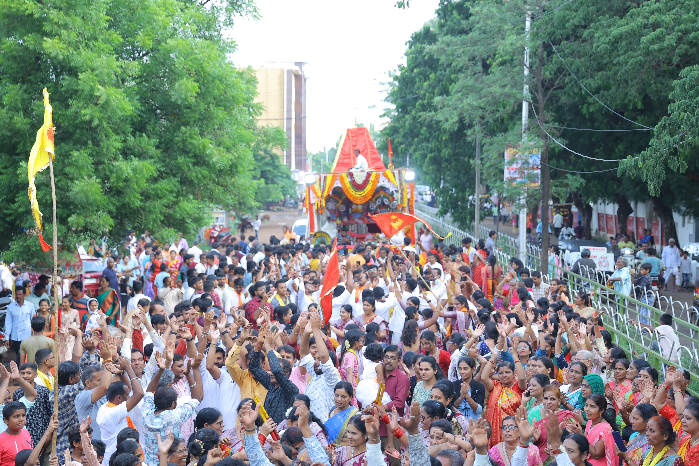
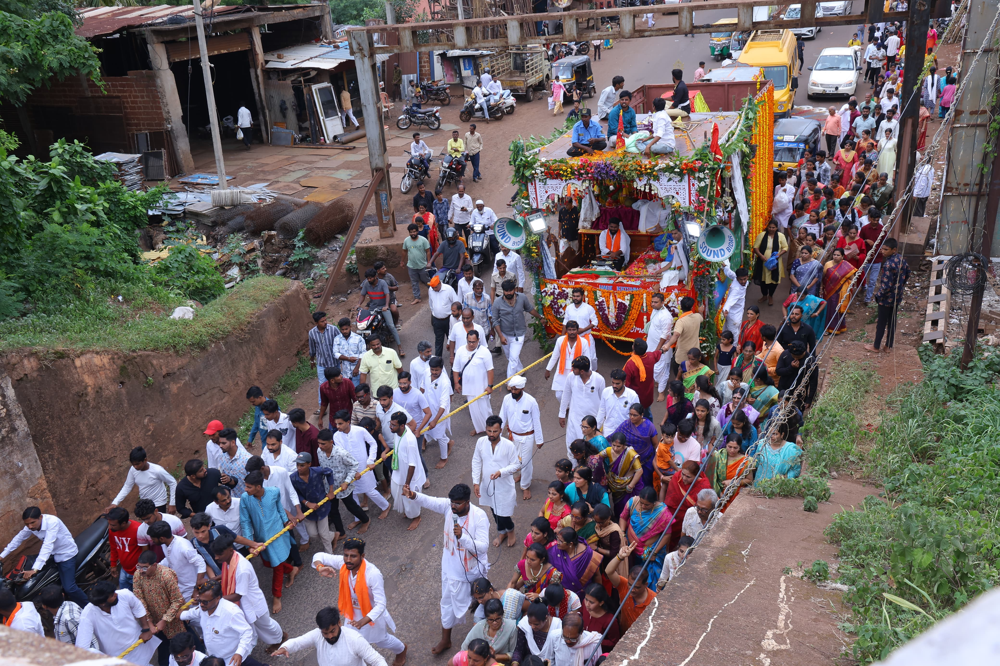
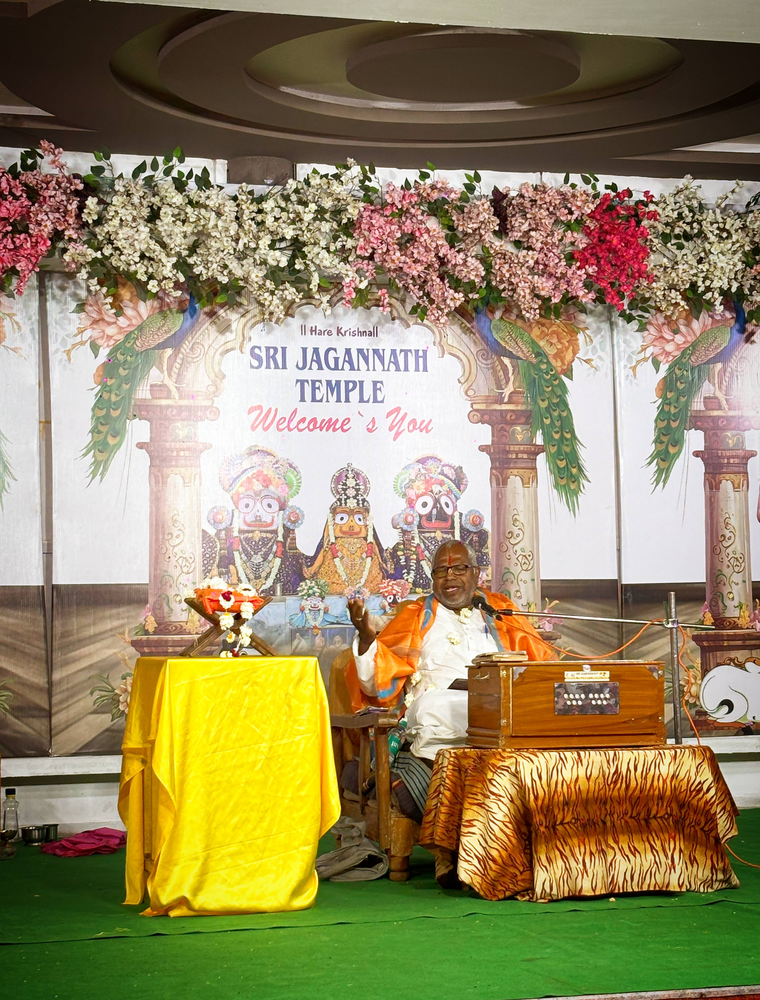
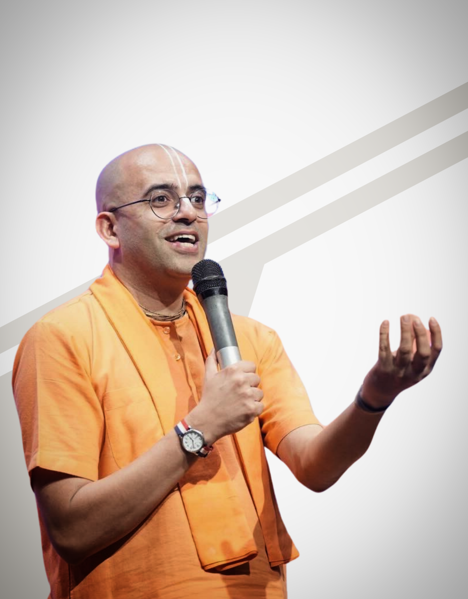
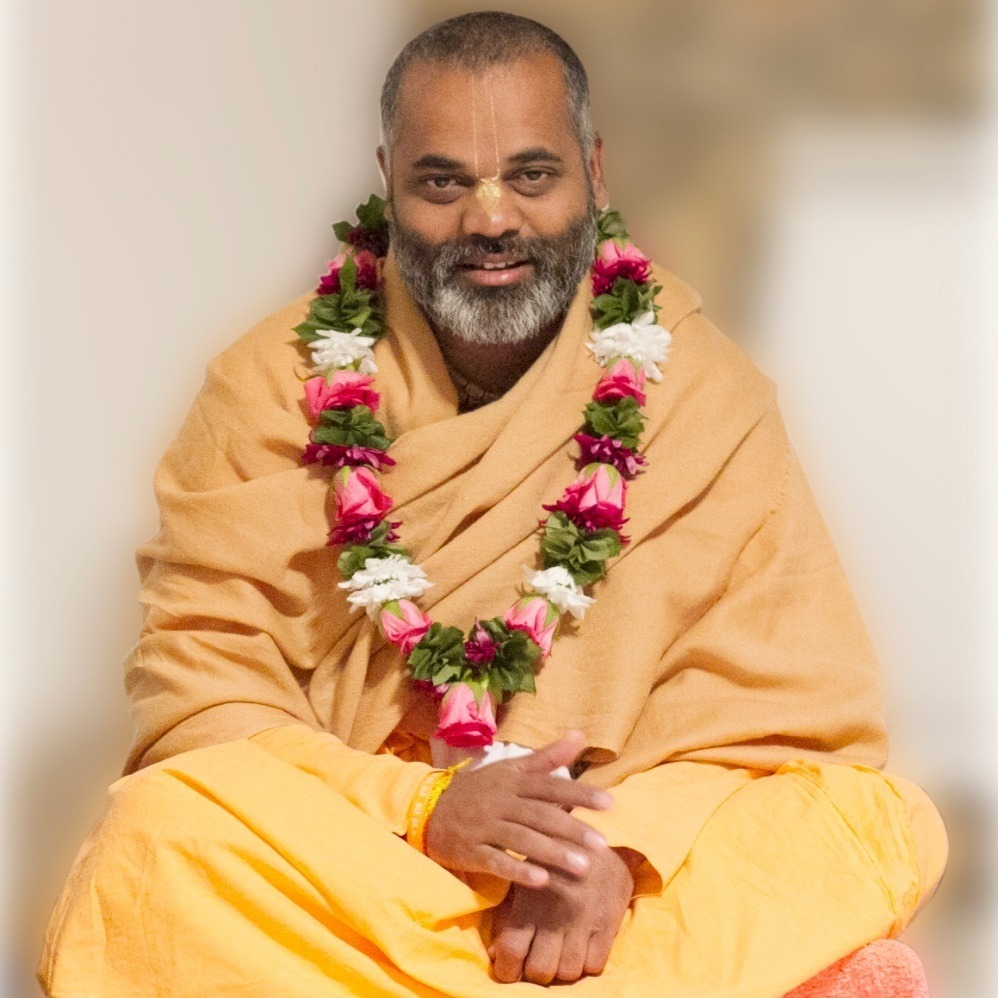
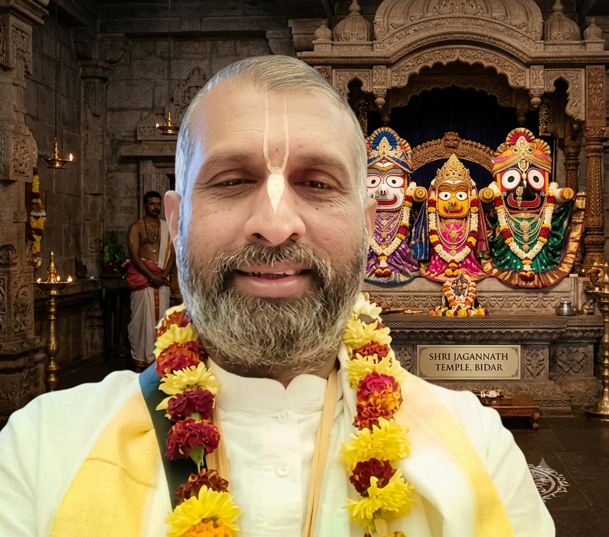

Top 15 Shringar Darshan
Experience the divine beauty of the Deities as they are beautifully decorated in fifteen distinct traditional attires (Beshas) throughout the calendar year. Swipe or scroll horizontally to see them all.
Annual Procession Tracks
Click on any procession card below to load comprehensive descriptions alongside a slide-by-slide 10-photo album detailing historical footprints from Bidar's street festivals.

Shoba Yatra 2024
Community Procession

Ratha Yatra 2024
Chariot Festival

Ratha Yatra 2025
Chariot Festival

Ratha Yatra 2026
Current Highlights
Procession Name
Yatra TypeDetailed descriptions of the track historic event will load here automatically...
Spiritual Leaders
Honoring the revered spiritual guides, teachers, and acharyas who have graced our temple premises in Bidar with their holy footprints and transcendental discourses.
HG Sahadeva Das
Shiksha Guru"We are immensely fortunate to have His Grace Sahadeva Das ji as the guiding light and Shiksha Guru of the Shri Jagannath Temple in Bidar. His regular visits to share the timeless wisdom of the scriptures and his presence during our Ratha Yatra festival are invaluable gifts that continue to shape, educate, and spiritually enrich our entire congregation. Through his profound realization and practical approach to Vedic life, he provides us with the steady direction needed to navigate our daily spiritual journeys. We pray for his continued shelter and blessings upon Bidar, so that we may always remain inspired by his divine instructions."
HH Mahaman Guru Maharaj
Deeksha Guru"The roots of devotion in Bidar trace back to the boundlessness of HG Mahaman Prabhuji, our revered Diksha Guru. Under his spiritual shelter, Shambhunath Prabhu and Satidevi Mataji took up the historic mission to install the beautiful Deities here and found the Shri Jagannath Temple. Their combined sacrifice and love continue to bless the land of Bidar, filling our hearts with devotion during every Ratha Yatra."

HG Shravan Bhakt Prabhuji
Senior Preacher & Kirtan Guide"With hearts full of joy, we honor HG Shravan Bhakta Prabhuji for his tireless efforts in uplifting the Bidar devotee community. Known for his powerful kirtans and dedication to congregational care, his frequent visits to the Shri Jagannath Temple are always a source of immense inspiration. Most recently, he blessed our city by conducting a glorious Srimad Bhagavatam Saptah, bringing the timeless pastimes of the Lord to life. Through his profound scriptural discourses and soul-stirring kirtans, he continues to heal, unite, and elevate our entire community."

HG Amogh Leela Prabhuji
Renowned Motivational Speaker | Youth Icon"We are boundlessly ecstatic to honor HG Amogh Leela Prabhuji, a globally renowned motivational speaker, lifestyle counselor, and international preacher of YouTube fame. Known for explaining ancient scriptural facts using delightful real-world humor and everyday logic, his presence electrified our city during his historic two-day visit to Bidar. From the moment we extended a grand, respectful welcome to him all the way from Hyderabad to the Shri Jagannath Temple, the atmosphere was charged with divine energy. His visit culminated in an unforgettable assembly featuring amazing kirtans, ecstatic dancing, and profound satsang that drew an incredible crowd of over 6,000 to 7,000 young professionals, students, and citizens, leaving the entire community deeply blessed and spiritually transformed."
HG Radhika Kripa Devi Dasi
Bhakti Discourse Speaker"With deepest gratitude, we honor HG Radhika Kripa Devi Dasi, a renowned international preacher, author, and Bhakti discourse speaker. Known for her sweet, emotional style and focus on internal meditative steps and household peace, Mataji recently blessed our entire city with an extensive preaching program. Her inspiring classes for the Bidar community at the Shri Jagannath Temple have illuminated the path of pure devotion, bringing spiritual upliftment and harmony to countless families throughout the region."

HH Kinkar Damodar Maharaj
Traveling Sannyasi & Scholar"We are profoundly blessed by the constant mercy of His Holiness, who regularly visits Bidar to enlighten us with his preaching. His presence during our annual Ratha Yatra festival brings immense spiritual joy, and we feel truly fortunate to have his continuous guidance and blessings at the Shri Jagannath Temple."

HG Sachi Suta Das
Youth Preacher | Iskcon Kolhapur"The devotee community of Bidar extends its heartfelt gratitude to HG Sachi Suta Das of ISKCON Kolhapur for showering his blessings upon our Shri Jagannath Temple. Known for his infectious energy and dedication as a Youth Outreach Coordinator, Prabhuji bridges the gap between modern career ambitions and spiritual integrity. His impactful seminars in Bidar have become a guiding light for students and young professionals, giving them the ethical tools to face life's challenges with confidence and devotion. We are profoundly blessed by his continued guidance and investment in our youth."
Annual Festivals
Participate in our vibrant, year-round festive schedule. Browse our core community celebrations and watch historical visual highlights below.

Pranpratishta Deity Anniversary
Commemorating the sacred installation anniversary of our beloved Deities with elaborate maha-abhishek rituals and special community offerings.

Gaura Purnima Mahotsva
The blissful appearance festival of Sri Chaitanya Mahaprabhu, celebrated with ecstatic congregational chanting, kirtan, and a color festival.

Raam Navami Mahotsva
Celebrating the advent of Lord Ramachandra with inspiring scriptural discourses on ideal character, special pujas, and panakam distribution.

Narasimha Jayanti Mahotsva
Honoring the divine appearance of Lord Narasimhadeva with powerful evening prayers, targeted protective shield mantras, and holy fire rituals.

Maha Mango Festival
A beautifully unique summer celebration where thousands of fresh, seasonal mangoes are lovingly arranged and offered to the Lord.

Kartik Damodar Month
A month-long candle and lamp-lighting evening festival where hundreds of standard clay diyas are offered by global pilgrims inside the main halls.

Ratha Yatra Mahotsva
The majestic chariot festival bringing the Lord outside the sanctum sanctorum to meet, look upon, and bless all citizens across Bidar.

Krishna Janmashtami
The glorious appearance day celebration of Lord Krishna featuring complex midnight Maha-Abhishek bathing rituals and immense feast operations.

Radhashtami Mahotsva
Honoring the divine advent appearance of Shrimati Radharani with gorgeous, colorful local flower structures and sweet devotional songs.

Govardhan Mahotsva
Celebrating the sweet pastimes of Lord Krishna lifting the sacred hill, featured alongside an elaborate mountain model made entirely of sweets.

Tulsi Vivah Celebration
The beautiful ceremonial wedding of the sacred Tulsi plant to Lord Shaligram, marking the formal beginning of the auspicious wedding season.